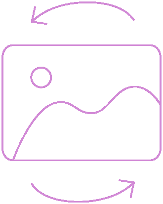
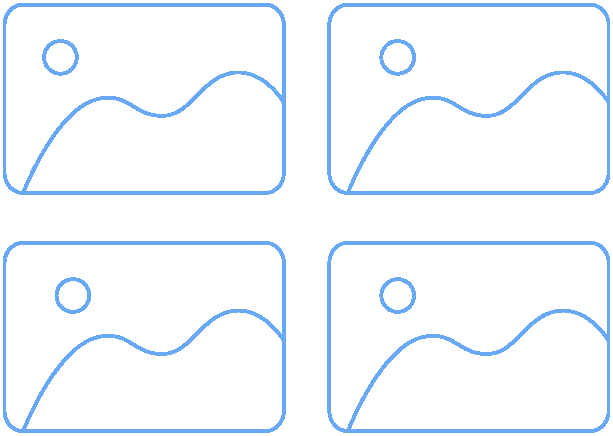
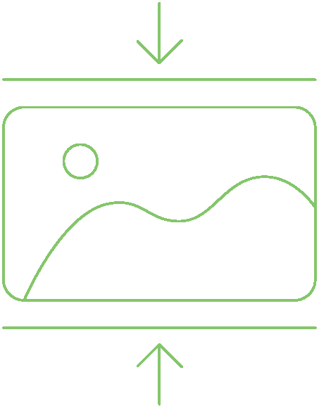
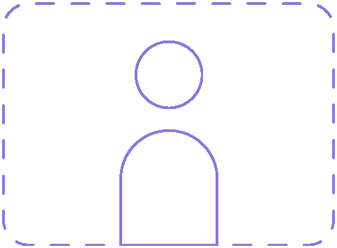

WebsiteTools




More Features
靈魂出竅，螢幕對看
當休息模式開始反覆出現，代表你已經進入正常發揮狀態。我們不提供任何有建設性的功能，只提供陪伴你開啟電腦螢幕滑手機的。
讓我們一起放棄掙扎
教授問你進度到哪裡了？直接把這個網頁傳給他。讓系統幫你把所有邏輯與檔案一併物理銷毀，從此人間蒸發，快樂過年。
Education 教育專用退化方案
從小培養提早放棄的好習慣。學生與教師專屬優惠。安裝後可自動略過所有作業要求，直接體驗出社會後的無力感，提早適應職場。
 網站工具 網站工具
網站工具 網站工具